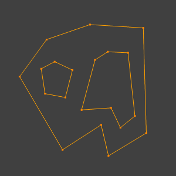

Face Tools¶
Reference
| Mode: | Edit Mode |
|---|---|
| Menu: | |
| Hotkey: | Ctrl-F |
These are tools that manipulate faces.
Fill¶
Reference
| Mode: | Edit Mode |
|---|---|
| Menu: | |
| Hotkey: | Alt-F |
The Fill option will create triangular faces from any group of selected edges or vertices, as long as they form one or more complete perimeters.
- Beauty
- Arrange the new triangles nicely.

Filled using fill.
Note, unlike creating n-gons, Fill supports holes.

A closed perimeter of edges with holes. |

Filled using fill. |
{kind=link}
Beautify Faces¶
Reference
| Mode: | Edit Mode |
|---|---|
| Menu: |
Beautify Faces works only on selected existing faces. It rearrange selected triangles to obtain more “balanced” ones (i.e. less long thin triangles).
- Max Angle
- An angle delimiter option to limit edge rotation to flat surfaces.

Text converted to a mesh. |

Result of Beautify Faces. |
Grid Fill¶
Reference
| Mode: | Edit Mode |
|---|---|
| Menu: |
Grid Fill uses a pair of connected edge loops or a single, closed edge loop to fill in a grid that follows the surrounding geometry.
The best predictable result can be achieved if you select two opposite edge loops with an equal number of vertices. When a single, closed edge loop is selected, the Span/Offset options allows you to adjust the way two opposite edge loops are detected from one closed edge loop.
- Span
- Specifies the number of columns in the grid.
- Offset
- Defines the vertex that is considered to be the corner of the grid, by default, it’s the active vertex. The Offset allows you to rotate the grid lines.
- Simple Blending
- Use a simple interpolation algorithm to generate grid vertices from boundary loops, which doesn’t attempt to maintain the shape, useful for flat surfaces or times when keeping the shape gives odd results.

Input. |

Grid Fill result. |
Solidify¶
Reference
| Mode: | Edit Mode |
|---|---|
| Menu: |
This takes a selection of faces and solidifies them by extruding them uniformly to give volume to a non-manifold surface. This is also available as a Modifier. After using the tool, you can set the offset distance in the Adjust Last Operation panel.
- Thickness
- Amount to offset the newly created surface. Positive values offset the surface inward relative to the normals direction. Negative values offset outward.

Mesh before solidify operation. |

Solidify with a positive thickness. |

Solidify with a negative thickness. |
Intersect¶
Intersect (Knife)¶
Reference
| Mode: | Edit Mode |
|---|---|
| Menu: |
The Intersect tool lets you cut intersections into geometry. It is a bit like Boolean Tool, but, does not calculate interior/exterior. Faces are split along the intersections, leaving new edges selected.
- Source
- Selected/Unselected
- Operate between the selected and unselected geometry.
- Self Intersect
- Operate on the overlapping geometry of the mesh.
- Separate Mode
- All
- Splits the geometry at the new edge.
- Cut
- Keep each side of the intersection separate without splitting the faces in half.
- Merge
- Merge all the geometry from the intersection.
- Merge Threshold
- See Intersect (Boolean).
Intersect (Boolean)¶
Reference
| Mode: | Edit Mode |
|---|---|
| Menu: |
Performs boolean operations with the selection on the unselected geometry. While the Boolean Modifier is useful for non-destructive edits, access to booleans with a tool in Edit Mode can be useful to quickly perform edits.
- Boolean
- Difference, Union, Intersect
- Swap
- Changes the order of the operation.
- Merge Threshold
Tolerance for close faces to be considered touching, It may be useful to increase this when some intersections aren’t detected that should be and when extra geometry is being created because edges aren’t detected as overlapping.
Warning
A threshold approaching size of faces may cause very slow calculation, in general keep this value small.
Wireframe¶
Reference
| Mode: | Edit Mode |
|---|---|
| Menu: |
The Wireframe tool makes a wireframe from faces by turning edges into wireframe tubes, similar to the Wireframe Modifier.
Poke Faces¶
Reference
| Mode: | Edit Mode |
|---|---|
| Menu: |
Splits each selected faces into a triangle fan, create a new center vertex and create triangles between original face edges and new center vertex. The Offset can be used to make spikes or depressions.
- Poke Offset
- Offset the new center vertex along the face normal.
- Offset Relative
- Multiply the Offset by the average length from the center to the face vertices.
- Poke Center
Computes the center of a face.
- Weighted Mean
- Using the mean average weighted by edge length.
- Mean
- Using the mean average.
- Bounds
- Uses center of bounding box.
Triangulate Faces¶
Reference
| Mode: | Edit Mode |
|---|---|
| Menu: | |
| Hotkey: | Ctrl-T |
This tool converts each selected faces (whether it be quads or n-gons) to triangular faces. See the Triangulate Modifier.
Triangles to Quads¶
Reference
| Mode: | Edit Mode |
|---|---|
| Menu: | |
| Hotkey: | Alt-J |
This tool converts the selected triangles into quads by taking adjacent triangles and removing the shared edge to create a quad, based on a threshold. This tool can be applied on a selection of multiple triangles.
This means you can select the entire mesh and convert triangles that already form square shapes – to be converted into quads, without having to concern yourself with individual faces.
Alternatively you can force this operation selecting a pairs of faces (see hint below for other ways of joining).
To create a quad, this tool needs at least two adjacent triangles. If you have an even number of selected triangles, it is also possible not to obtain only quads. In fact, this tool tries to create most even rectangular quads from the given triangles, which means some triangles could remain.

Before converting tris to quads. |

After converting tris to quads. |
All the menu entries and hotkeys use the settings defined in the Operator panel:
- Max Angle
- This value, between (0 to 180), controls the threshold for this tool to work on adjacent triangles. With a threshold of 0.0, it will only join adjacent triangles that form a perfect rectangle (i.e. right-angled triangles sharing their hypotenuses). Larger values are required for triangles with a shared edge that is small, relative to the size of the other edges of the triangles.
- Compare UVs
- When enabled, it will prevent union of triangles that are not also adjacent in the active UV map.
- Compare Vertex Color
- When enabled, it will prevent union of triangles that have no matching vertex color.
- Compare Sharp
- When enabled, it will prevent union of triangles that share an edge marked as sharp.
- Compare Materials
- When enabled, it will prevent union of triangles that do not have the same material assigned.
Hint
When isolated groups of faces are selected these can be combined with Create Face or Dissolve Faces, this is not limited to quads.
Weld Edges into Faces¶
Reference
| Mode: | Edit Mode |
|---|---|
| Menu: |
A tool to split selected faces by loose wire edges. This can be used in a similar way to the Knife tool, but the edges are manually setup first.
Rotate Edges¶
Reference
| Mode: | Edit Mode |
|---|---|
| Menu: |
This tool functions the same edge rotation in edge mode. It works on the shared edge between two faces and rotates that edge if the edge was selected.

Two adjacent faces selected. |

Selected edge rotated. |
See Rotate Edge for more information.
Rotate & Reverse¶
- Rotate/Reverse UVs
- See Face Mirror and Rotate UVs.
- Rotate Colors
- Rotates the Vertex Colors inside faces either clockwise or counterclockwise.
- Reverse Colors
- Flips the direction of Vertex Colors inside the selected faces.
Normals¶
See Editing Normals for more information.